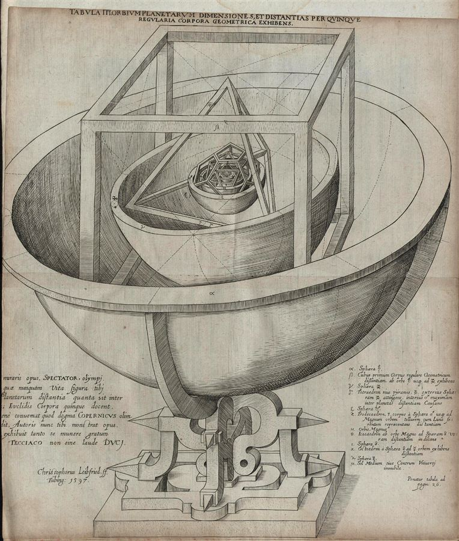

Cogito?Johannes Kepler, the planetary model of the Mysterium Cosmographicum, 1596
A research run on one question: whether physics and the humanities share one architecture for their posits, and where that architecture breaks — one request and the report it produced
Physics and the humanities share one architecture for their posits — Ramsey–Lewis quantification, implicit definition, inferential role, and structure — but humanities posits lose traction at three joints: determinacy, protection from Newman’s trivialization, and reflexivity. The report concludes that the real divide is disciplined against undisciplined inquiry, not empirical against non-empirical.
This chat is a single research run. Charith asked Claude to carry out research based on the summary report from the previous conversation; Claude wrote a detailed brief, sent it to its research tool, and delivered the report reproduced in full below.
The question is given as written, with grammar corrected. Claude’s reply is reproduced as given: its opening note, the brief sent to the research tool (in a section you can open), the short summary, and the full report. The report’s list of web sources is left out.
The report’s seven sections in order. The gold link is its critical core: the three disanalogies.
One request, the brief Claude wrote for its research tool, and the report that came back.
The request, and everything Claude returned.
This is a richly specified research task with a clear critical direction — the summary report in document 2 essentially maps out where all prior attempts fell short. I’ll launch a deep research pass that builds on the Gemini PDF’s technical foundation, incorporates the suggested follow-up angles (Newman’s objection applied to humanities, Lakatos demarcation, the Sokal-style challenge), and targets the precise blind spots identified.
Write a synthetic philosophical essay of 3500–5000 words titled something like “The Conceptual Anatomy of Theoretical Posits: Isomorphisms, Disanalogies, and the Limits of the Architecture” that goes BEYOND existing summaries of the topic and critically stress-tests the central argument. The essay should be written at the level of a reader fluent in Kant, Sellars, analytic philosophy of science, and continental social theory.
Core thesis to develop and critically refine (not just assert): Physical and humanistic theories share a structural architecture (Ramsey-Lewis functional definition + implicit axiomatic definition + inferentialist holism + structural realism), but this isomorphism is under pressure from three specific disanalogies that all prior treatments fail to press seriously. The essay must establish the isomorphism AND stress-test it until it breaks — then assess what survives.
SECTION 1 — The Two-Layer Architecture and the Paradigm Case
SECTION 2 — Three Accounts of Theoretical Meaning, Compared
A. Ramsey-Lewis existential quantification: Frank Ramsey’s 1929 manuscript “Theories” — theoretical terms become bound variables; the theory becomes an existential claim about whatever uniquely satisfies the Ramsey sentence. David Lewis’s 1970 “How to Define Theoretical Terms” — the CL1 (unique realization), CL2 (null realization), CL3 (multiple realization) three-case analysis. Evaluate: works cleanest when unique realization is guaranteed; fragile under vague or multiple realization.
B. Implicit definition / Hilbert-program approach: Terms are defined by the axioms in which they jointly appear. Examples from Newtonian mechanics, general relativity (the Einstein field equations define spacetime curvature and stress-energy tensor simultaneously), and quantum mechanics (the Schrödinger equation defines the wavefunction). Evaluate: most permissive — anything in a coherent axiomatic system gets meaning, which raises the question of what distinguishes physics from elaborate fiction.
C. Semantic holism / inferentialism: Sellars’s “Empiricism and the Philosophy of Mind” (1956) — rejection of the myth of the given, language entry/exit/intralinguistic rules. Brandom’s Making It Explicit (1994) — “space of reasons,” meaning as inferential role (what follows from the concept, what it excludes, what licenses it). Evaluate: most flexible account but faces regress worry: if meaning is purely inferential role, what anchors the network to the world?
Compare the three accounts: each solves a different problem, each has a characteristic failure mode. The best account is likely a combination.
SECTION 3 — Structural Realism and Its Critics
SECTION 4 — The Humanities Parallel: Two Paradigm Cases
Test whether the Ramsey-Lewis / implicit definition / inferentialist architecture holds for:
A. Bourdieu’s “habitus”: What is the Ramsey sentence for habitus? Habitus is defined by its role: it is the disposition structure that (i) is generated by objective conditions, (ii) generates practices that reproduce those conditions, (iii) operates below conscious deliberation, (iv) mediates between field structure and individual practice. This looks like a Ramsey-Lewis placeholder. BUT: does it satisfy Lewis’s unique-realization condition? Is there a unique social-psychological kind that plays this role, or do different actors’ dispositional structures play it differently? Press this: if habitus is vaguely or multiply realized across contexts, the Ramsey-Lewis machinery degrades into something looser — a family-resemblance concept rather than a functionally determinate term.
B. Foucault’s “discourse/episteme”: The episteme is defined by its role: that which determines what counts as legitimate knowledge in a given era. Similarly for discourse: a system of statements that determines what can be said, thought, and known. These look like implicit definitions — the concepts are mutually constituting within the theory’s axiomatic structure. But apply the Newman worry directly: is any sufficiently large and varied social domain guaranteed to satisfy Foucault’s structural descriptions? If yes, the theory is trivially confirmed and structurally empty. This is the Sokal-adjacent challenge stated in precise structural-realist terms.
Also mention: Althusser’s “ideology” (defines subjects by interpellating them), Gramsci’s “hegemony” (defines power by its consent-generating function). Both look Ramsey-Lewis-ish but share the multiple-realization and Newman problems.
SECTION 5 — Three Disanalogies That the Literature Fails to Press
This is the critical core. All prior treatments assert the isomorphism; this section stress-tests it.
Disanalogy 1 — The Determinacy Gap: Newton’s “force” in F=ma has a determinate functional role: given mass and acceleration, force is numerically fixed. This determinacy is what makes Ramsey-Lewis work cleanly (unique realization follows from quantitative precision). Humanities posits like “habitus” or “ideology” lack this numerical determinacy. They are qualitative functional placeholders that can absorb a wide range of social phenomena without generating specific quantitative predictions. This is not merely a difference in degree — it is a structural difference in the kind of constraint the functional role imposes. The Ramsey-Lewis formalism still applies formally, but its epistemic force (Lewis’s unique-realization condition, CL1) is severely weakened. Conclusion: the architecture isomorphism holds formally but not with equal epistemic traction.
Disanalogy 2 — The Newman Collapse Applied to Humanities: In physics, Newman’s trivialization is blocked by requiring that the structural relations be “natural” or physically realized, not logically arbitrary. The resources for this restriction come from physical law: F=ma is not just any functional relation, it’s one instantiated by mass distributions. In humanities, the analogous restriction is far harder to specify. Social structures are not law-governed in the same way; any sufficiently large, complex social formation can be described as exhibiting “hegemonic consent” or “discursive exclusion” if we choose relations liberally. The structural realist’s defense — intensional restriction to “real” relations — requires a background theory of what social relations are real, which is exactly what is contested. This creates a hermeneutic circle: the theory determines which relations are real, which determines which structures confirm the theory. Physics escapes this through external physical constraint; humanities cannot escape it in the same way.
Disanalogy 3 — The Reflexivity Problem (Hacking’s Looping Kinds): Physical posits (electrons, gravitational fields) do not change their referents by being theorized. Electrons don’t read physics papers. Social posits (habitus, ideology, discourse) DO change their referents by being theorized. Bourdieu’s habitus concept, once deployed, becomes part of the cultural field it describes; socialized agents who learn the concept may alter their habitus in response. This means the unique-realizer condition fails not contingently but structurally: the act of theorizing changes what is theorized, so the Ramsey sentence cannot have a stable unique realizer. The referent is a moving target, not because our measurement disturbs it (as in quantum mechanics) but because it is constitutively responsive to theorization. This is a deeper disanalogy: physical theoretical posits can (in principle) satisfy the Ramsey sentence stably; social posits cannot, because they are self-affecting.
SECTION 6 — Validity Criteria: What Replaces Prediction?
SECTION 7 — What Survives the Stress Test and Its Philosophical Implications
Critical requirements:
Audience: Philosophically advanced reader, comfortable with formal logic, analytic philosophy of science, and continental social theory. Do not introduce basic concepts at undergraduate level.
Your philosophical analysis of theoretical posits across physics and the humanities is ready. It develops a four-layered architecture (Ramsey–Lewis quantification, Hilbertian implicit definition, Sellars–Brandom inferentialism, and Worrall-style structural realism) and tests its isomorphism between physical concepts like force and field and humanistic posits like habitus, ideology, and episteme. The report identifies three key disanalogies — the determinacy gap, Newman-collapse vulnerability, and Hackingean reflexive looping — and offers verdicts on specific programmes (Bourdieu as progressive, late discourse analysis as degenerate, certain Althusserian moves as self-sealing). It closes by arguing the real demarcation is rational vs. irrational inquiry, not empirical vs. non-empirical, with concrete recommendations for theorists, evaluators, and critics on both sides of the divide.
Begin with an analytical distinction whose significance is too often elided. The vocabulary of any mature theory comprises (i) first-order empirical abstractions — mass, length, duration, temperature, frequency of utterance — which are tied to laboratory or field procedures even if no procedure exhausts them; and (ii) theoretical posits — force, field, energy, gauge connection; or, in the social sciences, habitus, ideology, episteme — introduced not to label observables but to explain regularities among them. The two layers are not separated by an epistemic wall (as the logical empiricists once hoped) but by a difference in the route by which the term acquires content: layer-one terms have, at minimum, partial extensional anchoring; layer-two terms acquire content from the role they play in a larger inferential apparatus.
Newtonian gravitation is the paradigm. The two laws — F = ma and F = Gm₁m₂/r² — together with the gravitational potential field Φ satisfying ∇²Φ = 4πGρ, do not present “force” as something one points at. The spring scale gives us a number; what the number means is fixed by the joint commitment of the two laws together with the broader Newtonian framework. One could equally well have written the dynamics in terms of momentum, Lagrangian, or Hamiltonian, with “force” emerging derivatively. The term acquires its semantic life by sitting at a node in a structure whose total commitments are checked against the world.
This is precisely what makes Carl Hempel’s theoretician’s dilemma (“The Theoretician’s Dilemma: A Study in the Logic of Theory Construction,” in Minnesota Studies in the Philosophy of Science vol. II, ed. Feigl, Scriven, and Maxwell, 1958, pp. 37–98) look initially devastating and ultimately mis-posed. Hempel’s thrust: if theoretical terms succeed in establishing systematic deductive connections among observation sentences, then by the standard interpolation results those connections can in principle be effected by purely observational machinery, and the theoretical terms are eliminable; if they do not establish such connections they are useless. Either way, scientific necessity for theoretical terms is illusory.
The dilemma is a false dichotomy for two reasons that Hempel himself essentially diagnosed. First, the “elimination” preserves deductive relations among observables but not the inductive ones — and as Carnap conceded in “The Methodological Character of Theoretical Concepts” (1956), inductive systematization is what theoretical vocabulary uniquely provides. Second, even where deductive eliminability holds de jure, the first-order surrogate is computationally and heuristically intractable: theoretical posits earn their keep as cognitive instruments of unification, not as logical necessities. The dilemma assumes a purely syntactic conception of theoretical role that the actual practice of physics belies.
Carnap’s reduction sentences (Testability and Meaning, 1936–37) were the most sophisticated attempt to thread the needle. Theoretical terms receive partial interpretation via correspondence rules connecting them, conditionally, to observation vocabulary. The proposal fails because partial interpretation systematically underdetermines the term’s full inferential load. To know that “x has electric charge q” entails certain observable consequences under certain boundary conditions is to know far less than working physicists know about charge: its conservation, its quantization, its relativistic transformation, its gauge structure. The reduction-sentence apparatus is too weak to deliver this content; the term is constitutively richer than its observational anchoring.
The operationalist alternative collapses still more decisively. P. W. Bridgman’s slogan — “the concept is synonymous with the corresponding set of operations” — founders on multiple realizability. Force can be measured by spring scales, torsion balances, accelerometers, gravitational lensing, and indirect inference from particle tracks. These operations diverge wildly in their physics; they share an object only because we presuppose that they are different ways of getting at the same theoretical quantity. Operationalism cannot say what makes them ways of getting at the same thing without already covertly invoking the theoretical role it was meant to eliminate.
What remains? Three accounts, each addressing a different aspect of the problem.
(A) Ramsey–Lewis existential quantification. Frank Ramsey’s “Theories,” composed in 1929 and published posthumously in The Foundations of Mathematics and Other Logical Essays, ed. R. B. Braithwaite (London: Kegan Paul, Trench, Trubner & Co., 1931), pp. 212–236, introduced the device that bears his name: take the conjunction of a theory’s axioms, replace each theoretical term with a distinct second-order variable, and existentially quantify. The Ramsey sentence ∃X₁…∃Xₙ T[X₁,…,Xₙ; o₁,…,oₘ] asserts that something plays the role assigned by the theory to its theoretical terms. David Lewis, in “How to Define Theoretical Terms” (Journal of Philosophy 67, 1970, pp. 427–446) and “Psychophysical and Theoretical Identifications” (Australasian Journal of Philosophy 50, 1972), refined the strategy into a definite-description analysis: a theoretical term t denotes the unique entity x such that T[x] — if such a unique realizer exists. Lewis distinguished three cases: CL1 (unique realization: t denotes the realizer), CL2 (null realization: t is denotationless), CL3 (multiple realization: t is also denotationless, on Lewis’s official 1970 view).
The Ramsey–Lewis framework works cleanly when the theory’s joint constraints are tight enough to force unique realization. Its characteristic failure mode is fragility: vague theories, theories with multiple realizers, or theories whose realizers fluctuate diachronically cannot be saved by the formalism without ad hoc patches.
(B) Implicit definition: the Hilbertian approach. A complementary tradition, going back to Hilbert’s Grundlagen der Geometrie (1899), holds that the axioms in which a term appears jointly and implicitly define it. The Einstein field equations Gμν + Λgμν = (8πG/c⁴) Tμν simultaneously define the spacetime metric and the stress-energy tensor; neither is given antecedently, and the equation is not testable by independent interpretation of the two sides. Quantum mechanics introduces the wavefunction Ψ by axioms (the Schrödinger equation, the Born rule, the canonical commutation relations) which collectively constrain what Ψ must be. This account is more permissive than Ramsey–Lewis: anything embedded in a coherent axiomatic system gets meaning, regardless of whether unique realization can be proved.
Its characteristic failure mode is the inverse: it threatens to permit too much. If implicit definability through axiomatic coherence suffices for meaningfulness, what distinguishes physics from elaborate fiction? Hilbert’s own answer — Widerspruchsfreiheit, consistency — is famously insufficient, as Frege noticed in his correspondence with Hilbert: chess pieces have implicitly defined roles too. Something must connect the axiomatic structure to the world.
(C) Semantic holism and inferentialism. Wilfrid Sellars’s “Empiricism and the Philosophy of Mind” (Minnesota Studies in the Philosophy of Science I, 1956) inaugurated the third account by attacking the Myth of the Given: there are no epistemically privileged “inner episodes” that confer meaning on terms by ostension. Meaning is conferred by position in a network of language-entry transitions (perceptual reports), language-exit transitions (intentional action), and intra-linguistic moves (inferences). Robert Brandom’s Making It Explicit: Reasoning, Representing, and Discursive Commitment (Harvard University Press, 1994) systematizes this into a full-blown inferentialism: the meaning of a concept is its inferential role — what claims it follows from, what claims it precludes, what observational and practical commitments it licenses. To grasp a concept is to know how to play with it in the “space of reasons,” to maintain a deontic scorecard tracking one’s own and others’ commitments and entitlements. Quine’s holism in “Two Dogmas of Empiricism” (Philosophical Review 60, 1951) belongs in this lineage: no statement faces experience alone; the unit of empirical content is the whole web of belief.
Inferentialism is the most flexible of the three accounts and accommodates the actual semantic life of theoretical posits better than its rivals. But it confronts a regress worry that Brandom’s defenders have never adequately stilled: if meaning is purely inferential role, what anchors the network to the world? Without some account of the network’s grip on its domain — without language-entry and language-exit transitions doing real work — inferentialism degenerates into chess-piece semantics. Brandom acknowledges the worry through his appeal to non-inferential observation reports and reliable differential responsive dispositions; whether this concession reintroduces a tamed version of the Given is the central live debate in the secondary literature.
The three accounts are best read not as competitors but as components of a single architecture. Ramsey–Lewis formalizes the referential semantics of theoretical terms by treating the theory as an existential claim. Implicit definition formalizes the combinatorial semantics by which axioms jointly constrain meaning. Inferentialism formalizes the pragmatic semantics by which terms acquire content through their role in a discursive practice. A working theoretical posit is a node in all three respects simultaneously.
So far the question has been semantic: what is the meaning of a theoretical posit? Structural realism converts this into an epistemic and metaphysical question: which features of our theories should we believe? John Worrall, in “Structural Realism: The Best of Both Worlds?” (Dialectica 43, 1989, pp. 99–124), revived a position he traced to Henri Poincaré: we should believe the mathematical structure of mature scientific theories but suspend judgement about the intrinsic nature of unobservables. Worrall’s leverage is the transition from Fresnel’s elastic-solid ether theory of light to Maxwell’s electromagnetic theory. The ontology shifts radically; but Fresnel’s equations for reflection and refraction survive unchanged into the Maxwellian framework. The “no-miracles” intuition is satisfied by structural continuity; the pessimistic meta-induction is defanged because we never committed to the ether in the first place.
James Ladyman (“What is Structural Realism?” Studies in History and Philosophy of Science 29, 1998, pp. 409–424) and Steven French radicalized the position into ontic structural realism (OSR): structure is not merely all we can know but all there is — objects are derivative from, or constituted by, relational structure. This metaphysical inflation is meant in part to dodge the central technical objection that haunts the entire structuralist tradition: Newman’s objection of 1928.
M. H. A. Newman, reviewing Russell’s Analysis of Matter in Mind 37, 1928, observed that “any given collection of things can be organised to have a [given] structure W, provided there are the right number of them” (p. 144). Set-theoretically: given any set A of suitable cardinality and any abstract relational structure W, one can always define an extensional relation R on A whose structure is isomorphic to W. Hence purely structural knowledge collapses into knowledge of cardinality plus a theorem of set theory. Russell, in private correspondence, essentially conceded. The objection was revived in modern dress by William Demopoulos and Michael Friedman (“Critical Notice: Bertrand Russell’s The Analysis of Matter: Its Historical Context and Contemporary Interest,” Philosophy of Science 52, 1985, pp. 621–639), who showed that the Ramsey sentence of a consistent theory whose observational consequences are all true is itself true as a theorem of second-order logic or set theory — provided only that the theoretical domain has the right cardinality. Jeffrey Ketland (“Empirical Adequacy and Ramsification,” British Journal for the Philosophy of Science 55, 2004, pp. 287–300) formalized this: the Ramsey sentence ℜ(Θ) is true iff Θ is empirically adequate and the cardinality condition is met. Structural realism, on its naive Ramseyfied formulation, threatens to collapse into constructive empiricism plus a cardinality claim.
The contemporary responses divide into three strategies. The first is the mixed-predicate defense: include some O-terms in the Ramsey sentence so that the structural description is not purely abstract. This succeeds locally but reintroduces precisely the theoretical/observational distinction structural realism was supposed to bypass. The second is the intensional restriction defense, developed most clearly by David Lewis (“Putnam’s Paradox,” Australasian Journal of Philosophy 62, 1984, pp. 221–236, which cites Newman 1928 explicitly) and elaborated by Joseph Melia and Juha Saatsi (“Ramseyfication and Theoretical Content,” British Journal for the Philosophy of Science 57, 2006, pp. 561–585). Restrict the second-order quantifiers to range only over natural properties and relations — the “elite few” properties (Lewis’s phrase: paradigmatically mass, charge, quark colour and flavour) that carve nature at its joints. Arbitrary set-theoretic constructions are then ineligible, and Newman’s collapse is blocked. The cost is metaphysical: the structural realist must now help themselves to a primitive notion of naturalness or causal/modal significance. Melia and Saatsi argue the rescue is short-lived: properties once thought natural turn out disjunctive, and the realist who relies on naturalness inherits all the problems of pessimistic meta-induction at one level up. The third is the OSR dissolution: Newman’s objection presupposes a domain of relata whose intrinsic natures are hidden; OSR denies the presupposition. If structure goes all the way down, there is no fact about which set-theoretic extension is the “real” one because relations are not arbitrary stipulations on a presupposed object-domain. Whether OSR thereby evades the objection or merely relocates it — to: what distinguishes a real modal structure from an arbitrary one? — remains contested.
Across all three responses, Stathis Psillos’s challenge (“Is Structural Realism the Best of Both Worlds?” Dialectica 49, 1995, pp. 15–46; Scientific Realism: How Science Tracks Truth, Routledge, 1999, ch. 6) cuts deeper. The “No Miracles” argument that motivates realism in the first place demands not merely that structure be preserved across theory change but that the theoretical terms refer — that “electron” or “electromagnetic field” successfully picks out an entity in the world. Mere structural preservation, on Psillos’s analysis, cannot underwrite the no-miracles inference, because the inference requires that the success of the theory be because of the world’s structure, and that “because” demands genuine reference, not just isomorphism. Psillos thus presents the structural realist with a dilemma: weaken the position enough to dodge the pessimistic meta-induction and you weaken it past the point where it can ground the no-miracles argument; strengthen it enough to ground no-miracles and you reintroduce the burdens of full-blown realism. This dilemma is the standing scandal of the structuralist tradition.
I now press the architecture against humanities theory, taking two paradigm cases.
Bourdieu’s habitus. Consider the Ramsey sentence one would write for habitus. Habitus is defined by its role: it is the disposition-structure that (i) is generated by the objective conditions of an agent’s social position, (ii) generates practices that tend to reproduce those conditions, (iii) operates below the threshold of conscious deliberation, (iv) mediates between field structure and individual practice, and (v) is durable but transposable across contexts. This is, in form, a Ramsey–Lewis placeholder: habitus = ι x [Φ(x, objective conditions, practices, field, …)].
The form is impeccable. The question is whether Lewis’s unique-realization condition is satisfied. Is there a unique social-psychological kind that plays this role, or do different agents’ dispositional structures realize it differently — and indeed, do “objective conditions” pick out a determinate input to the function? Bourdieu’s own treatment is famously sliding: in Outline of a Theory of Practice (1972/1977) habitus has a phenomenological cast; in Distinction (1979) it is statistically operationalized through correspondence analysis of taste; in Pascalian Meditations (1997) it is given a quasi-cognitive interpretation. The functional role is preserved; the realizer is multiply specified. Under Lewis’s CL3 the term is technically denotationless. The more honest verdict is that habitus is a family-resemblance functional placeholder: real enough to do explanatory work, but not unique-realization-determinate in Lewis’s sense.
Foucault’s discourse and episteme. Les Mots et les choses (1966) introduces the episteme as “the total set of relations that unite, at a given period, the discursive practices that give rise to epistemological figures, sciences, and possibly formalized systems” — that which “in any given culture and at any given moment … defines the conditions of possibility of all knowledge, whether expressed in a theory or silently invested in a practice” (Foucault, The Order of Things, English ed., 1970, p. 168). This is paradigmatically an implicit definition: discourse, episteme, statement, archive, dispositif are mutually constituting concepts inside the archaeological apparatus; none has an independent referent.
The implicit-definition account would predict that the Foucauldian framework is meaningful so long as it is internally coherent and connects to its domain. But now apply Newman’s worry directly. Is any sufficiently large and varied social formation guaranteed to satisfy Foucault’s structural descriptions? Consider the Foucauldian claim that an episteme determines what counts as legitimate knowledge in an era. Given any sufficiently rich social formation, can one find regularities of statement-formation, exclusions, and authorizations that satisfy the description? The answer appears to be yes, more or less trivially: any large discursive corpus exhibits some statistical regularities of exclusion, some authorizing institutions, some boundary between sayable and unsayable. The cardinality of the discursive domain is enormous; the structural description is highly schematic; the relations are not law-governed. The theory therefore threatens to be trivially confirmed on any society we examine — which is just the structural-realist’s Newman collapse, transposed.
This is the Sokal-adjacent worry stated in precise terms. Alan Sokal’s 1996 hoax — the publication of “Transgressing the Boundaries: Toward a Transformative Hermeneutics of Quantum Gravity” in Social Text nos. 46/47 (Spring/Summer 1996, pp. 217–252), revealed as parody in “A Physicist Experiments with Cultural Studies,” Lingua Franca, May/June 1996, pp. 62–64 — exploited the suspicion that certain postmodern apparatus could absorb nearly any content because its core terms lacked a determinate functional role. The structural-realist analysis lets us state the worry without polemic: the Foucauldian apparatus, on a naive Ramseyfication, satisfies Newman’s trivialization condition because the relations it postulates are not constrained by anything analogous to physical law.
Althusser’s ideology shares the structure. Ideology is defined by its function of interpellating individuals as subjects — “Hey, you there!” — and reproducing the relations of production. The functional role is clearly stated; the realizer is multiply and contestedly specified, ranging across Ideological State Apparatuses (schools, churches, families), discursive practices, and psychic identifications mediated by Lacanian misrecognition. Gramsci’s hegemony is the same type: power defined functionally by its capacity to generate consent rather than coercion, operationalized through the work of organic intellectuals and the colonization of common sense. Both look Ramsey–Lewis-ish; both face the unique-realization and Newman problems acutely.
I now stress-test the isomorphism. The architecture — Ramsey–Lewis + implicit definition + inferentialism + structural realism — holds formally across physical and humanistic theories. The disanalogies that follow show that its epistemic traction does not.
Disanalogy 1: The Determinacy Gap. Newton’s “force” in F = ma has a determinate functional role in a precise mathematical sense: given mass and acceleration, the value of force is numerically fixed. Lewis’s CL1 condition — unique realization — is not a hope but a theorem of the formalism, modulo measurement. The Ramsey sentence of Newtonian mechanics has a unique realizer because quantitative precision forces uniqueness: any candidate function on the domain of physical quantities that fails to satisfy F = ma at every point fails to be the realizer.
Humanities posits like habitus or ideology lack this numerical determinacy. They are qualitative functional placeholders: the formal description says “something that generates practices reproducing objective conditions”; it does not say “the unique X such that, given conditions C, the rate of practice generation equals f(C).” The functional role is consistent with a wide range of operationalizations and a wide range of empirical phenomena. This is not merely a difference of degree but a structural difference in the kind of constraint the functional role imposes. The Ramsey–Lewis formalism still applies formally — one can write down the existential sentence — but its CL1 condition is severely weakened. The vague functional placeholder cannot pick out a unique realizer because the constraints do not narrow the field. The architecture isomorphism therefore holds formally but not with equal epistemic traction. This disanalogy is not contingent (a matter of underdeveloped social science); it is constitutive (a matter of the type of constraint qualitative functional roles can impose).
Disanalogy 2: Newman Collapse Applied to Humanities. In physics, Newman’s trivialization is blocked by the intensional-restriction maneuver: restrict the second-order quantifiers to natural relations — those instantiated by physical law, picked out by Lewis’s “elite few” properties. The resources for this restriction come from physical law itself: F = ma is not just any functional relation; it is one nomologically instantiated by mass distributions in the actual world.
In humanities, the analogous restriction is far harder to specify. Social structures are not law-governed in the way physical structures are. Any sufficiently large, complex social formation can be described as exhibiting “hegemonic consent” or “discursive exclusion” or “habitus-field correspondence” if we choose relations liberally enough. The structural realist’s defense — intensional restriction to “real” relations — requires a background theory of which social relations are real. But the theory under examination is precisely a theory of which social relations are real. This creates a hermeneutic circle: the Foucauldian theory determines which discursive regularities count as “real” power-knowledge configurations; the satisfaction of the theory by particular social formations then confirms the theory.
The physical analogue would have us say that Maxwell’s equations themselves determine which electromagnetic configurations are “real,” and any electromagnetic phenomenon we then observe confirms Maxwell. This is blocked in physics by the external discipline of measurement: voltage readings, frequency counts, and field-strength values are constrained by procedures that are not themselves Maxwell-dependent. In humanities the discipline is internal: the theory’s concepts are the very lens through which the phenomena are constituted as data. The hermeneutic circle is irreducible, not merely a methodological inconvenience.
This is a sharper version of the worry that critics from Popper through Sokal have voiced. The structural-realist analysis lets us see why their suspicion was partially right: humanities theories cannot simply borrow the intensional-restriction defense that protects physical structuralism from Newman collapse, because they lack the external nomological resources that defense requires.
Disanalogy 3: The Reflexivity Problem (Hacking’s Looping Kinds). Physical posits do not change their referents by being theorized. Electrons do not read physics papers. The Ramsey sentence of QED has, if it has any realizer at all, a stable realizer — stable in the strong sense that the realizer’s properties are independent of the act of theorization.
Social posits do change their referents by being theorized. This is Ian Hacking’s central insight about human kinds or interactive kinds in “The Looping Effects of Human Kinds” (in Dan Sperber, David Premack and Ann James Premack, eds., Causal Cognition: A Multidisciplinary Debate, Oxford: Clarendon Press, 1995, pp. 351–383; further developed in The Social Construction of What?, Harvard University Press, 1999). Bourdieu’s habitus, once published and taken up by educators, social workers, and self-aware agents, becomes part of the cultural field it describes; agents who learn the concept may alter their dispositions in response, and the very acts of social-scientific classification feed back into the classified. Foucault’s discourse analysis, once incorporated into curricula and clinical practice, becomes a discourse within the field. Althusser’s interpellation, once recognized as such by readers, alters the modalities of subject-formation in cultures where the analysis circulates.
This means the unique-realizer condition fails not contingently but structurally. The Ramsey sentence of habitus theory has no stable realizer because the act of theorizing changes what is theorized. The referent is a moving target — not because measurement disturbs it (as in quantum mechanics, where the disturbance is itself nomologically specifiable and the disturbance terms are themselves quantum-mechanical) but because it is constitutively responsive to theorization. A theory whose referent shifts under the gaze of the theory cannot satisfy a Ramsey sentence stably; in Lewis’s terms it is forever in a kind of dynamic CL3.
This is a deeper disanalogy than 1 or 2. Determinacy and Newman collapse concern the constraint structure of the theory; reflexivity concerns the ontological category of the referent. Even an idealized social science with perfectly determinate posits and a successful intensional restriction would face this third problem.
If the architecture isomorphism holds formally but with weaker traction in humanities, what supplementary criteria distinguish good from bad humanities theory? Empirical prediction in the physical sense is unavailable, but the absence of prediction does not entail unconstrained inquiry.
Imre Lakatos’s “Falsification and the Methodology of Scientific Research Programmes” (in Lakatos and Musgrave, eds., Criticism and the Growth of Knowledge, Cambridge University Press, 1970, pp. 91–196) supplies the most useful resource. A research programme is progressive if its successive theories generate novel content — predict facts not anticipated by predecessors — and some of that novel content survives empirical test; it is degenerating if its successive moves merely accommodate facts already known, modifying the protective belt to absorb anomalies without generating new content. The criterion transposes recognizably to humanities. A humanities programme is progressive if it generates novel interpretive distinctions, reveals previously invisible structures, extends to new domains with content not derivable from its initial commitments; degenerating if it merely re-describes whatever it encounters in its native vocabulary.
Apply this with verdicts, not gestures.
Bourdieusian field theory is plausibly progressive. The original analyses of educational reproduction in La Reproduction (1970, with Passeron) generated novel claims about the matching of habitus to institutional expectations that subsequent research has tested and refined. The extensions to the aesthetic field in Distinction (1979), to the scientific field in Homo Academicus (1984) and Science of Science and Reflexivity (2001), to the religious field, and the literary field in The Rules of Art (1992) generated genuinely novel predictions about, e.g., the relation between dominant and dominated positions within a field, the dynamics of consecration, and the conditions of autonomization. These are interpretive predictions, not numerical ones, but they are substantive: they say what to look for and what would be surprising. The programme has been criticised, revised, and developed by sympathetic critics (Lahire, Wacquant) and adversarial ones (Boltanski, Latour) in ways that suggest a living research practice rather than a closed orthodoxy.
Late post-structuralist discourse analysis is increasingly hard to defend as progressive. The framework of discourse, power-knowledge, and dispositif, in some of its more diffuse 1990s and 2000s deployments, generates interpretations that are systematically compatible with nearly any social formation. Find a regulatory practice; identify the discourse that constitutes it; locate the productive power; trace the dispositif. The vocabulary absorbs the material rather than constraining it. This is the Lakatosian mark of degeneracy: the protective belt has swallowed the hard core. Foucault’s own work, especially the lectures at the Collège de France, is more disciplined and progressive (the work on biopolitics, on governmentality, on the care of the self generates genuine novel distinctions). But the broader practice that derives from him often is not. The verdict here is not “post-structuralism is degenerate” but “much applied discourse analysis has degenerated, and the analytic vocabulary makes it hard to tell.”
I distinguish three failure modes in humanities theorizing:
Genuine degeneracy in the Lakatosian sense: a programme generates no novel interpretive content beyond its initial commitments; it confirms itself on every new case because its concepts are flexible enough to absorb anything. Many late-period applications of discourse analysis fall here.
Progressive interpretive deepening: a programme generates novel distinctions, reveals previously invisible structures, extends to new domains with real predictive content in the interpretive sense. Bourdieu’s sociology, much historical sociology in the Tilly–Skocpol–Mann tradition, and the better work in critical race theory fall here.
Self-sealing closure: a programme explicitly forecloses external criticism by incorporating all potential counterevidence as further confirmation. Certain versions of Althusserian Marxism display this pathology: objections to the analysis can themselves be interpreted as ideological effects, so falsification is impossible in principle. This is worse than degeneracy because it is immune to the Lakatosian diagnosis: the programme cannot be shown to be degenerating from inside, because the very criterion of degeneration is rejected as bourgeois epistemology.
To these I add a fourth, domain-specific criterion that Hacking’s looping kinds force on us: transformative adequacy. A social theory is not asked only whether it predicts or coheres but whether it accurately tracks and productively intervenes in social formation. A theory that generates novel distinctions, illuminates previously hidden structures, and produces interpretive resources that agents can take up to modify their own conduct in ways the theory then can re-analyse, is in a real sense more adequate than one that merely re-describes. This is not epistemic relativism; it is the recognition that interactive kinds change in response to their being known, and theories that engage with this dynamic intelligently are doing better epistemic work than ones that pretend to a physics-style detachment they cannot have.
The architecture isomorphism survives at the formal level. Ramsey–Lewis existential quantification, implicit definition by axiomatic role, inferential holism, and structural realism all describe real features of both physical and humanistic theories. Habitus, ideology, episteme are genuinely theoretical posits — they acquire meaning through the same broad apparatus as force, field, and energy. The continental social theorists were not doing something fundamentally different from the analytic philosophers of science; they were doing structurally the same thing, in a domain where the constraints are different.
The isomorphism degrades under stress at three specific joints: the determinacy of the functional role, the availability of non-trivial natural relations to block Newman collapse, and the reflexivity of the social referent. These degradations are not symmetric across programmes. Some humanities theories are more determinate than others (econometric institutionalism more than discourse analysis); some have richer resources to block Newman collapse (analytical Marxism more than free-form post-structuralism); some are more honest about reflexivity (Bourdieu’s reflexive sociology more than Althusser’s structural Marxism). The degradation is, however, never wholly absent and never wholly disabling.
The degradation does not show that humanities theories are fairy tales. It shows that they participate in a looser but recognizable form of inquiry, one that requires supplementing the Ramsey–Lewis-style apparatus of term constitution with additional validity criteria: Lakatosian progressiveness, Hackingean transformative adequacy, and a self-conscious management of the hermeneutic circle that the Newman-collapse worry exposes.
Two further implications matter.
First, the analysis vindicates pure mathematics and certain philosophical posits against an over-simple empiricist demarcation. Mathematical terms are implicitly defined by axiomatic structure; they have no empirical feedback in the physical sense; yet they pass the inferential-discipline test with conspicuous success. Eugene Wigner’s celebrated essay “The Unreasonable Effectiveness of Mathematics in the Natural Sciences” (Communications on Pure and Applied Mathematics 13, no. 1, February 1960, pp. 1–14) closes with the line: “The miracle of the appropriateness of the language of mathematics for the formulation of the laws of physics is a wonderful gift which we neither understand nor deserve.” On the present analysis, the miracle is less mysterious than it appears: purely structural inquiry can track genuine features of reality (or at least of the possible) when its inferential discipline is tight enough. The contrast with humanities theory is not “mathematics is empirical, humanities is not”; both forgo direct empirical tethering. The contrast is in the tightness of the inferential discipline, which mathematics inherits from formal proof and which humanities must construct programme by programme.
Philosophical posits — Kant’s transcendental unity of apperception, Hegel’s Geist, Heidegger’s Dasein, Sellars’s manifest and scientific images themselves — function more like humanities posits than mathematical ones. They are embedded in inferential networks with validity criteria that are neither purely empirical nor purely formal: they live or die by their capacity to illuminate, to generate novel distinctions, to survive encounter with the conceptual terrain they map. Kant’s transcendental unity satisfies a Ramsey sentence of sorts (the something-or-other that must accompany all my representations if experience is to be possible); it is structurally analogous to Bourdieu’s habitus in this respect, though embedded in a different research practice.
Second, and most importantly, the analysis suggests that the empirical/non-empirical distinction is the wrong divide. The correct divide is between rational and irrational inquiry — where “rational” means participating in a practice of giving and asking for reasons (Brandom), generating genuine novel content (Lakatos), being genuinely revisable by encounter with its domain (the corrigibility condition), and (where applicable) managing the looping reflexivity of one’s referents intelligently (Hacking). On this criterion, good humanities theory — Bourdieu, the better Foucault, much serious historical sociology and critical theory — is rational inquiry. Bad physics, where it is empirically protected, self-sealing, or methodologically degenerate (the more defensive forms of string-theoretic landscape argumentation, certain self-protective interpretations of quantum mechanics, evolutionary-psychological just-so storytelling at the natural-science boundary), is not rational inquiry in the relevant sense, despite its empirical pretensions. The architecture analysis reveals that the real demarcation is about inferential discipline, not empirical content.
The diagnostic apparatus assembled here yields actionable directives for working theorists, evaluators, and critics in both physical and humanistic disciplines.
For humanities theorists working with functionally introduced posits (habitus, hegemony, performativity, biopower, etc.): be explicit about which version of the architecture you are deploying. If the posit is implicitly defined, state the axiom-like constitutive principles. If it is Ramsey–Lewis-style, write the functional role with enough precision that one can ask whether a unique realizer exists. The discipline of explicit formulation does not destroy the theory; it makes it possible to assess. Threshold for revising or abandoning a posit: when a competent critic can produce equally good interpretations of the same phenomena under three rival vocabularies and no consideration adjudicates among them, the posit has lost its differential content and should be either narrowed or set aside.
For evaluators of humanities programmes (journal editors, hiring committees, grant referees): apply Lakatos’s progressive/degenerating criterion concretely. Ask: what novel interpretive distinction did this programme generate in the last decade? What previously unrecognized phenomenon did it expose? What revisions has it undergone in response to challenge? Trigger for downgrading a programme as degenerate: a five-to-ten-year window in which the programme has produced no novel distinction not derivable from its founding commitments and has absorbed all anomalies by terminological inflation.
For critics of humanities theory tempted to Sokal-style dismissal: distinguish the three failure modes. Genuine degeneracy is a real diagnosis but a local one; it does not generalize from one programme to a whole tradition. Self-sealing closure is the worse pathology and warrants the harder critique; identify it by the explicit incorporation of objections into the theory’s confirmation. Family-resemblance vagueness is the mildest failure and is often compatible with progressive inquiry — vagueness alone is not the same as triviality.
For physicists and philosophers of physics tempted to STEM-supremacist gestures: the architecture isomorphism is real. The features that protect physics from Newman collapse are external — the nomological discipline of measurement, the unforgiving feedback of experiment — and are not constitutive of theoretical practice itself. Self-protective programmes in physics that lose this discipline (degenerate landscape arguments, certain anthropic-principle moves) are epistemically worse than disciplined humanities work, not better. Apply the same criterion to your own house.
For all theorists working with interactive kinds: take reflexivity seriously as a structural feature, not a contaminant. The honest move is Bourdieu’s: incorporate reflexive analysis into the programme. The dishonest move is to pretend to a physics-style detachment one cannot have. Benchmark: does the programme have explicit resources for analyzing its own uptake and the looping effects of its concepts? If not, this is the next item on the agenda.
For philosophers of science: the structural-realism debate has become preoccupied with intra-physics moves (quantum mechanics, spacetime ontology). It should be extended to the humanistic domain, where Newman’s objection takes its sharpest form and where the intensional-restriction defense is least available. The contribution would be of mutual benefit: structural realism in the philosophy of physics learns what its defenses presuppose by seeing where they fail; humanities theory inherits a precise diagnostic vocabulary for self-criticism.
Several limitations of the analysis should be acknowledged.
First, the Ramsey–Lewis machinery is itself contested within analytic philosophy of science. The CL2/CL3 verdict that multiply realized terms are denotationless is widely rejected by functionalists who treat disjunctive realization as compatible with reference. Adopting a more permissive functionalism would soften but not eliminate Disanalogy 1.
Second, the verdicts on specific humanities programmes (Bourdieu = progressive; late free-form discourse analysis = degenerate; certain Althusserian moves = self-sealing) are programmatic illustrations of the criterion at work, not full-dress case studies. A serious application would require detailed engagement with the relevant primary literatures over a decade-scale window. The diagnostic apparatus is offered as portable; the specific verdicts are revisable in the face of better case work.
Third, the OSR dissolution of Newman’s objection is treated more briefly than its defenders would wish. The debate over whether Ladyman–French OSR truly evades Newman or merely relocates it (in the work of Saatsi, Chakravartty, Frigg–Votsis) is technically delicate and remains open. The argument here does not depend on a verdict in that debate; even if OSR fully blocks Newman in physics, the disanalogies of section 5 establish that the corresponding move is harder in humanities.
Fourth, the Hackingean reflexivity disanalogy applies most strongly to programmes whose vocabulary has actually circulated widely enough to alter the social field. Niche humanistic programmes whose vocabulary has not propagated face the looping problem only counterfactually. The disanalogy is a structural feature of the domain, not always an actual constraint on every theory in it.
Fifth, the closing claim — that the real demarcation is rational vs. irrational inquiry, not empirical vs. non-empirical — is sympathetic to the broadly pragmatist tradition (Sellars, Brandom, recent Rorty) and will be resisted by realists who hold that empirical accountability is constitutive of cognitive significance. The argument here does not refute that position; it shows that the architecture analysis, pressed honestly, does not vindicate the strong empiricist demarcation it is sometimes thought to support. Disagreement at this final level is the appropriate philosophical disagreement to have.
Finally, several primary citations in this essay (e.g. the exact page references in Newman 1928 and Foucault 1966/1970) are reported via standard secondary sources rather than direct verification of the original printed page; the reader interested in precise quotation should consult the primary texts.
The request is Charith’s, corrected for grammar only. The brief, the summary and the report are Claude’s, as given in the conversation.